| |
|
ZEMİNDE YARMA GEOMETRİSİ
|
Bu sekmeden yarma geometrisi ile ilgili her şey tanımlanır. ISTRAM®BIM bu konuda, basit parametrik tanımdan başlayarak tablolara, 3B çizgilere, duvarlara vb. bağlı olarak şevlerin otomatik oluşturulmasına kadar, aşağıda ayrıntıları verilen çok geniş olanaklar sunar. 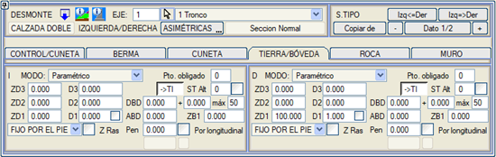
Parametrik Tanım
Vektörel Tanım Yarma Topuğu ve Şev Başına Göre Şev Tanımı Zayıf Zeminde Yarma Alternatif Tip Kesit Zorunlu Nokta Gelişmiş Tanımlar Tünel ve Aç-Kapa Tünel için Yarma Kesitleri Bu diyalog kutusunda, diyalog kutusunu genişletmeye veya daraltmaya yarayan bir  ikonu bulunur (Uzun/Kısa Menü). ikonu bulunur (Uzun/Kısa Menü).Parametrik Tanım  Farklı şevlerin uygulanacağı kademeler için ardışık yükseklikler girilir. Şev tanımı aşağıdaki parametrelerle yapılır: Farklı şevlerin uygulanacağı kademeler için ardışık yükseklikler girilir. Şev tanımı aşağıdaki parametrelerle yapılır:
Hesaplama sırasında, zemindeki yarma kesitinin yüksekliği ZD1, ZD2 veya ZD3'ten en büyüğünü AŞMAZSA, şevler yerine program, hendekten sonra, varsa görüş palyesinden sonra veya kaya varsa açığa çıkan kayadan sonra dikey bir şev (veya tanımlıysa bir duvar) yerleştirir ve bunun tacı AMD yatay bileşenli ve ZMD kot farklı bir şevle belirlenir. Bu nedenle, tanımlanan en yüksek şeve, araziyi kesecek kadar yeterli bir yükseklik atanması gerekir, bu yüzden genellikle 100 veya 1000 gibi bir değer atanır. Şevin Y:D oranına göre verildiğini (dikeyde bir birim yükselmek için yatayda gereken doğrusal birim) hatırlamak gerekir; böylece 0 şevi tamamen dikey olur ve sayı arttıkça şev daha yatık hale gelir. Eğer sadece bir şev kullanılacaksa, bu ZD1, D1 verilerinde yer almalıdır; eğer iki şev kullanılacaksa, ZD1, D1 ve ZD2, D2 olmalıdır ve üç şev durumunda da benzer şekilde devam eder. Kullanılmayan veriler sıfır olarak bırakılabilir. [ ] Boyuna Hatta Göre kutucukları, ilk palyenin kotunu yardımcı boyuna hattan alması için, [ ] Kırmızı Kot Z, yükseklikleri kırmızı kot kotundan ölçmesi için veya [ ] dZ'yi Koru, ilk palye yarma topuğunun altında kalırsa kot farkını korumak için etkinleştirilebilir. Vektörel Tanım 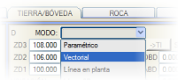Parametrik tanım yerine, burada zemindeki yarma kesitlerinin vektörlerle tanımı (sayısal veya grafik olarak) yapılabilir. Bir vektörle (veya tanımlıysa bir duvarla) tanımlandığında, uygulandığında arazi yüzeyiyle kesişime ulaşılmazsa, vektör yerine dikey bir şev yerleştirilir. Bu nedenle, genel olarak, bu vektörün tanımı her zaman araziye ulaşacak kadar büyük olmalıdır.
Vektörel tanımın üçüncü sütunu, vektörün her bir tepe noktasıyla ilişkili kodlara karşılık gelir. Vektörel ve Topuktan Sabit modundaki şevler için iki kontrol ayırt ederiz:
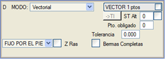
Yarma Topuğu ve Şev Başına Göre Şev Tanımı Şimdiye kadar açıklanan her şey, şev geometrisinin topuktan tanımlandığı durumlar için geçerlidir. Ancak program, şevleri şev başından tanımlamaya da olanak tanır. KONUM seçeneği, alışılmış ŞEV TOPUĞUNDAN SABİT modu ile ŞEV BAŞINDAN SABİT modu arasında geçiş yapmayı sağlar. 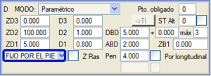
İlk durumda, zemindeki yarma aşağıdan yukarıya doğru uygulanır ve fazlalık yukarıdan kesilir. İkinci durumda, üst uç araziye yerleştirilir ve kesit fazlası, duruma göre hendeğin veya kayanın dış kenarında kesilir. 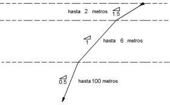Örneğin, 2 metrelik bir yüzeysel zemin katmanı, 6 metre derinliğe kadar sökülebilir kaya ve geri kalanı sağlam kaya olan bir durumda, uygun bir şev uygulaması, şekilde gösterildiği gibi Z1, Z2 ve Z3 için sırasıyla 108, 106 ve 100 aralıklarıyla şev başından sabit konumu dayatacaktır. 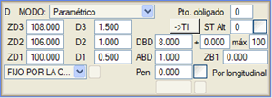
Zayıf Zeminde Yarma 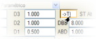Eğer [->Z.Z.] seçeneği etkinleştirilirse, zemindeki yarmada tanımlanan şev, zayıf zemin ve bitkisel toprak için de geçerli kabul edilir. Bu koşullar altında, yarma şevinin zayıf zemin ve bitkisel topraktan geçen çizgi kesimine, zayıf zemindeki yarmada kullanılan tip atanır. Ayrıca, zayıf zemini ve bitkisel toprağı desteklemek için yarma şev başında dolgu kamasına gerek olmadığı kabul edilir. Eğer tip kesitte bir zayıf zeminde yarma vektörü tanımlanmışsa ve aynı anda zemindeki yarma kesitinde bu seçenek etkinleştirilmişse, program şu şekilde hareket eder:
Alternatif Tip Kesit  Yarma kesiti uygulanırken öngörülen yükseklik aşılırsa ve alternatif tip kesit numarası sıfırdan büyükse, program yarma kesitini (kayada yarma + zeminde yarma) o alternatif tip kesitte tanımlanan verilerle oluşturmaya çalışacaktır. Yarma kesiti uygulanırken öngörülen yükseklik aşılırsa ve alternatif tip kesit numarası sıfırdan büyükse, program yarma kesitini (kayada yarma + zeminde yarma) o alternatif tip kesitte tanımlanan verilerle oluşturmaya çalışacaktır.Eğer bu kesitle de öngörülen maksimum yükseklik aşılırsa, o zaman ilk kesitin duvarı yerleştirilir. Mevcut kesit sayısı kadar alternatif kesitlere atlamalara izin verilir. Bu şekilde, artan yüksekliklere sahip bir dizi kesit tanımlanabilir ve program, yüksekliğe bağlı olarak ihtiyaç duyduğu kesiti seçer. Alternatif kesitler, yarma, dolgu ve her bir taraf için bağımsız olabilir. Bitişikteki kutucuk etkinleştirilirse, o zaman alternatif tip kesitin tüm bileşenleri (vektörler, kontrol noktası, palye, hendek ve yarma ile dolgu geometrisi) alınır ve SADECE yarma geometrisi alınmaz. Kontrol noktası da alındığı için, başlangıçta dolgu olan bir kesitin, alternatifle yarma kesitine dönüşmesi ve tersi mümkündür. Zorunlu Nokta Şev oluşturma noktalarının (parametrik veya vektörel) belirli bir sayısını zorunlu olarak tanımlamaya izin verilir.
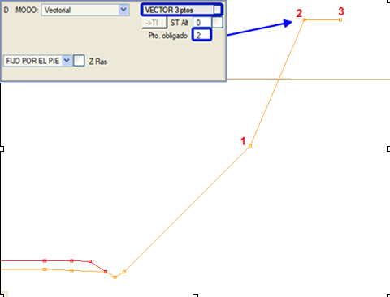
Gelişmiş Tanımlar Parametrik ve vektörel modların yanı sıra, ISTRAM®/ISPOL®, her zaman kullanıcının veri giriş sürelerini azaltmaya odaklanmış, çok güçlü bir yarma geometrisi tanım modları yelpazesi sunar. 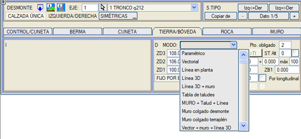
MOD açılır menüsüne tıklandığında, farklı tanım olanaklarını içeren bir yardım grafiği (model) ekranda açılır. Herhangi bir EDM çizgisinin kullanıldığı durumlarda, çizgiyi seçmek için [ÇİZGİ 0 nkt] düğmesine basılır ve ardından harita üzerinden çizgi seçilir. Seçilen çizgi ekranda daha kalın ve camgöbeği renginde gösterilir ve ayrıca menüde çizginin nokta sayısı görünür. [Aktar] seçeneği ayrıca, .vol dosyasında saklanan çizgiden bir EDM çizgisi oluşturmaya olanak tanır, bu da geldiği EDM dosyasını yüklemeye gerek kalmadan çizgiyi düzenlemeyi mümkün kılar. (Duvar) + Plan Çizgisi 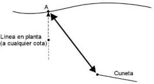  X ve Y koordinatlarına sahip bir plan çizgisinden yola çıkarak, program araziyle kesişimi hesaplar ve bu A kesişim noktasını hendeğin son noktası B ile birleştirir. X ve Y koordinatlarına sahip bir plan çizgisinden yola çıkarak, program araziyle kesişimi hesaplar ve bu A kesişim noktasını hendeğin son noktası B ile birleştirir.Eğer sabit yükseklikte bir duvar tanımlanmışsa (isteğe bağlı), önce duvar uygulanır ve eğer bu araziye ulaşmazsa, o zaman duvarın başından itibaren 3B çizginin konumuna veya plan çizgisinin konumundaki araziye kadar bir şev çizilir. (Duvar) + 3B Çizgi 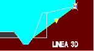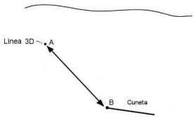Önceki yönteme benzer, ancak bu durumda çizgi, hendeğin son noktası B ile birleşerek ilgili yarma şevini oluşturan A noktasını verecektir. Bu şev, kesinlikle çizgide (A noktası) kesilecektir. Eğer (isteğe bağlı) sabit yükseklikte bir duvar tanımlanırsa, önce duvar uygulanır ve eğer bu araziye ulaşmazsa, o zaman duvarın başından itibaren 3B çizginin konumuna veya plan çizgisinin konumundaki araziye kadar bir şev çizilir. Kesitin yarma veya dolgu bölgesinde oluşmasından bağımsız olarak, son nokta, şev alçalırsa (ve hendek yoksa) 601 ve yükselirse 1399 olarak kodlanır. 3B Çizgi + Duvar 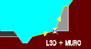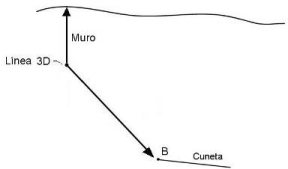Bu durumda 3B çizgi, bir duvarın temelini temsil edebilir. Bu nedenle, hendeğin son noktası çizgiye birleştirilir ve duvar dikey olarak araziyi kesene kadar devam eder. 3B çizginin kotu arazinin üzerindeyse, o zaman bu noktadan itibaren dolgu duvarı uygulanır. Şev Tablosu 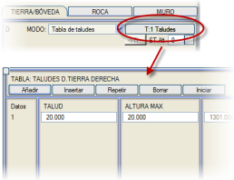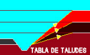Şev Tablosu modunun yanında başka bir [T:n Şev] düğmesi görünür. Bu tuşa basıldığında, vektör tanımına benzer bir menü açılır, ancak ŞEV ve MAKSİMUM YÜKSEKLİK sütunları bulunur. Hesaplama sırasında program, tablodaki ilk şevle denemeye başlar. Eğer öngörülen maksimum yükseklikten daha düşük bir yükseklikle araziye ulaşmazsa, program tablodaki bir sonraki veriyi denemeye başlar; eğer bununla da öngörülen maksimum yüksekliğiyle araziye ulaşmazsa, bir sonraki veriye atlar ve bu şekilde devam eder. Eğer tablodaki verilerden hiçbiriyle araziye ulaşılamazsa, o zaman dikey bir şev (veya tanımlıysa bir duvar) yerleştirilir. Duvar + Şev + Çizgi 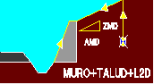Bu durumda çizgi, kullanıcının seçimine göre 2B veya 3B olabilir. Eğer 2B bir çizgiyse, bu araziye götürülür; eğer 3B ise, sahip olduğu kot korunur. Bu çizgiden itibaren, duvarı kesene kadar bir AMD/ZMD şevi (duvar taç değerleri kullanılarak) çizilir (bu nedenle duvar değişken yüksekliktedir). Alternatif olarak, tanımlanan AMD/ZMD şevi bir vektörle değiştirilebilir. Eğer vektörün herhangi bir noktası varsa, bu kullanılır ve tanımlanan AMD/ZMD değerleri dikkate alınmaz. Duvarın da şevleri, genişliği ve derinliği olabilir. Eğer çizgi, duvarı temelinin altından keserse, duvar ortadan kalkar ve daha yatık bir şev kalır. Eğer yarma şev tacı tanımlanmışsa, 2B çizginin arazi üzerindeki izdüşüm noktası, yarma şev tacının T şevi ile bir A yüksekliği kadar aşağı indirilir ve bu yeni noktadan itibaren duvar + şev geometrisi uygulanır. Yarmada (D) ve Dolguda (T) Asma Duvar 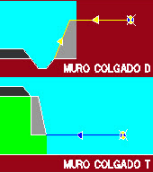Bu tip, her kilometrede kotunun alındığı bir 3B çizginin tanımlanmasını gerektirir. Kesitin yarma mı yoksa dolgu mu olduğu kontrol edilmez ve yarma duvarı, yarma duvarı için tanımlanan geometriyle (genişlik, derinlik, şevler,....) çizginin kotuna kadar inşa edilir. ASMA DUVAR D (yarma tipi), duvarın temelini platform kenarında ve başını 3B çizgiden gelen kota sahip olacak şekilde yerleştirir. Duvarın, yarma duvarında tanımlanan bir yükseltisi, derinliği ve diğer geometrik özellikleri olabilir. ASMA DUVAR T (dolgu tipi), duvarın başını platform kenarında ve temelini 3B çizgiden gelen kota sahip olacak şekilde yerleştirir. Duvarın, dolgu duvarında tanımlanan bir yükseltisi, derinliği ve diğer geometrik özellikleri olabilir. Duvarların geometrilerinin sırasıyla yarma ve dolgu alt menülerinde tanımlanmasına rağmen, hem yarmadaki hem de dolgudaki asma duvarların buradan tanımlandığına dikkat etmek gerekir. Bu duvar tipleri, otomatik olarak uygun yükseklikteki duvarı arayan duvar tanım menülerinin Oto seçeneğiyle uyumludur. Vektör + Duvar + 3B Çizgi 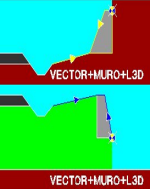Bu mod, kullanıcı tarafından tanımlanan bir vektörü platform kenarından itibaren uygular. Eğer enkesitteki 3B çizgi tarafından tanımlanan nokta vektörün üzerindeyse, noktadan başlayarak vektörü kesene kadar bir yarma duvarı uygulanır. Eğer enkesitteki 3B çizgi tarafından tanımlanan nokta vektörün altındaysa, noktadan yukarıya doğru vektörü kesene kadar bir dolgu duvarı yükseltilir. 3B çizgi hendek veya platform üzerinde kalsa bile, bu mod çalışmaya devam edecek ve sonuç olarak duvar, enkesitin ilgili bölümünü budayacaktır. Bu tanımı sadece yarmalarda uygulamak için [ ] Sadece yarma durumunda uygula seçeneği etkinleştirilebilir. Mod seçicinin yanındaki etiketsiz kutucuğu işaretleyerek, vektörün kayadaki yarmadan sonra başlamasını zorlayabiliriz. Görünür Şev 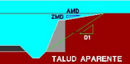Bu modda, yarma şev başı, hendek sonundan D1 şevi kullanılarak hesaplanır, ancak daha sonra kesit, önceden hesaplanan noktaya AMD/ZMD şevi kullanılarak kapatılan değişken yükseklikte bir duvarla oluşturulur. Ortaya çıkan duvar ve şev yükseklikleri orantılıdır. Duvar Yüksekliği 3B Çizgiye Göre 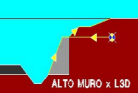Bu durumda, 3B çizginin kotu duvarın başının kotunu belirler, ardından duvarın tacı ve/veya tanımlanmış olan parametrik zeminde yarma kesiti ile devam edilir. Eğer 3B çizgi, duvarın başını arazinin üzerine çıkarırsa, kesit, dolgu kesitinde tanımlanan ilk şevle araziye karşı kapatılır. Duvarın başından itibaren uygulanan yarma, şev topuğundan sabit veya şev başından sabit olabilir. Ayrıca, bu duvar tipleri, otomatik olarak uygun yükseklikteki duvarı arayan duvar tanım menülerinin Oto seçeneğiyle uyumludur. Duvar + Döşeme 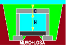Bu mod, bir taç döşemesi yerleştirilen ve sonra doldurulan duvarlardan bir aç-kapa tünel yapmayı sağlar. İki değer girilmelidir:
Demiryolunda:
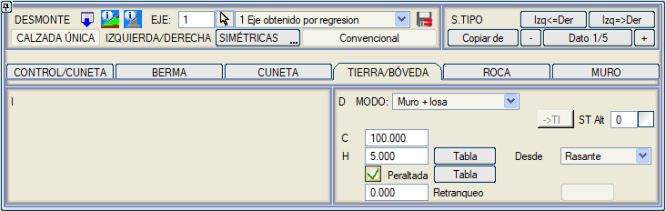 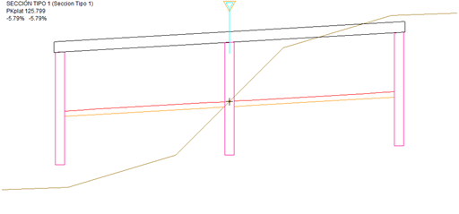 Prefabrik kirişli çatı: 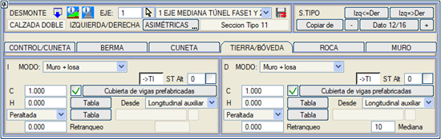 Bu seçenek etkinleştirilerek, döşeme yerine prefabrik kirişli bir çatı kullanılabilir. Hesaplama aralığı içinde neopren tablosunda veri varsa, her bir kirişin 2 dolgusunun da tanımlanan konum dikkate alınarak kirişler ve dolgular (tel kafes model ve BIM modeli) oluşturulur, ancak her iki dolgunun da prefabrik kirişli çatı ile tanımlanan hesaplama aralığı içinde olması gerekir. 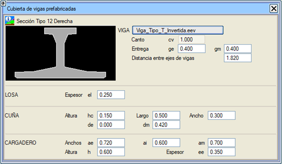 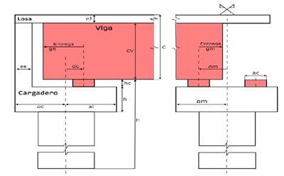 Döşeme yüksekliği H, kirişin tabanına kadar olacaktır. Seçenek etkinleştirildiğinde, aşağıdaki bilgilerin tanımlandığı bir diyalog kutusu açılır:
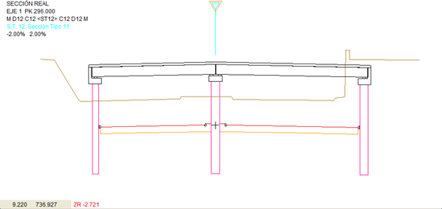 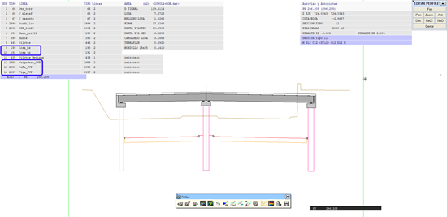 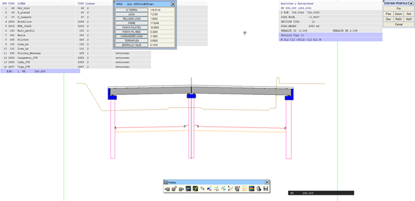 Bu elemanları tel kafes modelde temsil etmek mümkündür. Bunun için .lil Düzenle -> Tabliyeler ve Bordürler -> Prefabrik kirişli çatı menüsünden: 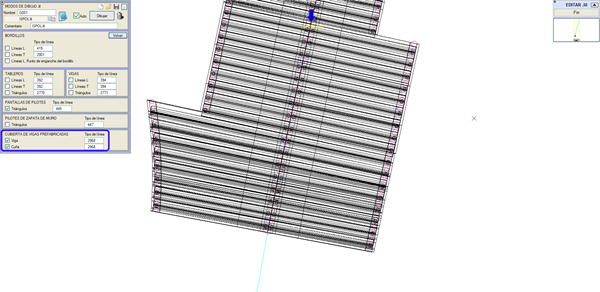  Ve ayrıca tüm elemanlar BIM modelinde oluşturulur: 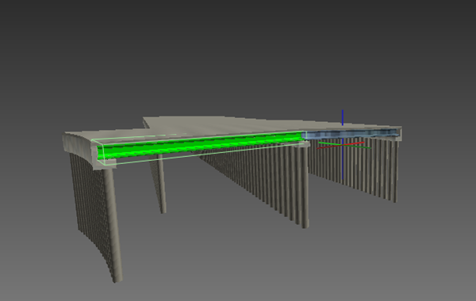 Çizim veya BIM modeli oluşturulurken, neoprenosX.xlsx adında bir rapor oluşturulur ve şunları içerir:
Vektör + Yarma + 3B Çizgi 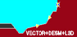Bu durumda, vektörel yarma, hendek veya görüş palyesinin sonundan itibaren uygulanır ve parametrik yarma, 3B çizginin konumundan itibaren şev başından sabit olarak uygulanır. Dolayısıyla, programın hesapladığı şey, ikisi arasındaki kesişimdir. Bu seçenek Vektör + Yarma + 3B Çizgi'ye benzer, ancak parametrik yarmanın şev topuğundan bağlanması sayesinde ilk palyenin kotu sabit bir değerle veya yardımcı kırmızı hat aracılığıyla boyuna hatta göre tanımlanabilir. Vektör + Duvar + 3B Çizgi + Yarma Vektör + Duvar + 3B Çizgi moduyla tamamen aynı şekilde çalışır, ancak farkı, 3B çizginin konumundan itibaren parametrik yarma geometrisinin araziyle kesişene kadar uygulanmasıdır. (Duvar) + 3B Çizgi + Yarma 3B Çizgi gibidir, ancak 3B çizginin konumundan itibaren parametrik yarma geometrisi araziyle kesişene kadar uygulanır. Duvar isteğe bağlıdır. (Duvar) 3B Çizgi + Vektörel Yarma Bu seçenek, (Duvar)3B Çizgi + Yarma ile aynıdır, ancak parametrik yarma tanımı yerine vektörel yarma kullanılır. 3B Çizgi + Palyeler Bu mod, hendek sonundan 3B çizgiye kadar giden şevi aşağıdaki geometriye sahip basamaklarla değiştirmeyi sağlar:
D1 şevi ile, palyeler ABD genişliğine ulaşana kadar basamaklar inşa edilir. O andan itibaren palyeler ABD genişliğinde korunur ve basamakların şevi artırılır. Eğer [ ] Sabit genişlikli palyeler seçeneği etkinleştirilirse, iki parametre daha eklenir:
Yarma + Vektör + 3B Çizgi 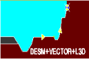Parametrik yarma, hendek veya görüş palyesinin sonundan itibaren şev topuğundan sabit olarak ve vektörel yarma da bir öncekinin kesişiminden itibaren şev topuğundan sabit olarak, 3B çizgide son bulacak şekilde oluşturulur. Dolayısıyla, programın hesapladığı şey, ikisi arasındaki kesişimdir. Bu seçenek, Vektör + Yarma + 3B Çizgi'ye benzer, ancak parametrik yarmanın şev topuğundan bağlanması sayesinde ilk palyenin kotu sabit bir değerle veya yardımcı kırmızı hat aracılığıyla boyuna hatta göre tanımlanabilir. Duvar Yüksekliği Tabloya Göre Bu mod, hem yarmada hem de dolguda uygulanabilir ve duvar başı kotları tablosuna erişim sağlar. Bu tablo, her bir taraf için bir Başlangıç KM ve bir Bitiş KM ile verilen kesimler tablosu ve bu kilometrelerdeki duvar başı kotunu tanımlamayı sağlar; öyle ki, bu kotun değeri Başlangıç Z'den Bitiş Z'ye doğrusal olarak değişir. Eğer açılır menüden Boyuna Hatta Göre seçeneğini seçersek, duvarın kotu Kırmızı Kot > Duvar Başı'nda girilen verilerle tanımlanacaktır. Veri satırı yoksa, eksenin başlangıç kilometresinden sonuna kadar bir tane oluşturulur. Diğer tarafa kopyala: Bir taraftaki verileri diğer taraf için kopyalama imkanımız vardır. Bu modla birden fazla tip kesit olsa bile tablo tektir. Bu modla tanımlanan bir kilometre, tablonun kesimleri dışındaysa, duvar, DUVAR sekmesinde kendisi için tanımlanan yükseklikle oluşturulur.  Duvar başı kotları tablosuna DÜŞEY GÜZERGAH → EKLENTİLER → DUVAR BAŞI KOTU'ndan da erişilebilir ve duvar taban kotu tablosuna çok benzer; en önemli fark, duvar başı kotu tablosunun tüm duvarları değil, yalnızca bu modla tanımlananları (hem yarmada hem de dolguda) etkilemesidir. Bu durum için, Dolgu sekmesinde en azından bir yükseklik (ZT1) ve bir duvar şevi (T1) tanımlanmış olması gerekir. Ayrıca, Duvarlar sekmesindeki AMT ve ZMT kutucuklarına değer girilmemelidir. Duvar Başı araziyi aştığında ve bir AMD/ZMD duvar bitiş şevi tanımlandığında: Eğer Duvar Başından AMD/ZMD şevi çizildiğinde bu araziyi kesmez ve üzerinde kalırsa, o zaman şevi daha düşük olsa bile AMD mesafesindeki araziye kadar giden bir segment kullanılır. Bu segmentin o mesafeden önce araziyle herhangi bir kesişimi olup olmadığı kontrol edilir ve o zaman bu noktada bırakılır. Bu veriler,  kutucuğundan .ccm uzantılı dosyalar aracılığıyla kaydedilebilir ve kutucuğundan .ccm uzantılı dosyalar aracılığıyla kaydedilebilir ve  kutucuğu aracılığıyla yüklenebilir. Sıfırla ikonu kutucuğu aracılığıyla yüklenebilir. Sıfırla ikonu  ile ekranda olabilecek tüm verileri kaldıracaktır. ile ekranda olabilecek tüm verileri kaldıracaktır.Tabloya göre duvar yüksekliği + 3B Çizgi modu, duvarın başını bir tabloyla yerleştirerek ancak daha sonra kesiti bir 3B çizgiye doğru kapatarak çok benzer şekilde çalışır. Duvar + Şev + 3B Çizgi + Vektör Duvar, AMD/ZMD şevi ile 3B çizgiye ulaşacak şekilde bir yükseklikte yerleştirilir. Sonra, eğer 3B çizgi yerin altındaysa, araziyi kesene kadar vektör eklenir. 2B Çizgi + Tabloya göre duvar yüksekliği 2B çizgi, duvarın iç yüzünü konumlandırır. Eğer çizgi, hendeğin son noktasından daha uzaktaysa, hendek duvara yatay bir segmentle uzatılır. Eğer çizgi hendek bölgesine düşerse, hendek o noktada budanır. Eğer çizgi platformun içine düşerse, çizgi dikkate alınmaz ve duvar platforma bitişik olarak yerleştirilir. 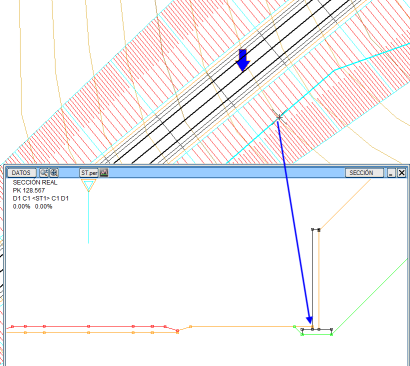
Şev Geçişleri Yarma ortaya çıktığında, bir şevle (D1o değeri) başlar ve bu ilk basamak H1 yüksekliğine ulaşana kadar devam eder. O kilometrede şunlar olur:
Diğer yarma tiplerinden farklı olarak, belirli bir kilometredeki geometri sadece o kilometredeki araziye değil, aynı zamanda tüm kesim boyunca evrimine de bağlıdır. Bu nedenle, ISPOLn.per dosyaları için geometri hesaplaması yapılmadan önce, her kilometrede önceki ve sonraki kilometrelere bağlı olarak hangi kesitin uygulanacağını belirleyen bir ön hesaplama gereklidir. Bu ön hesaplama, DÜŞEY GÜZERGAH'tan veya PROJE'den hesaplama yapıldığında otomatik olarak gerçekleştirilir. Ancak bunlardan hiçbiri yapılmadıysa veya bir parametre değiştirildiyse, [Kesit] veya [Anlık Kesit] bilgi izleyicisinde gezinmeden önce, bu tip kesitin tanımlandığı diyalog kutusundan ön hesaplamayı zorlamalıyız. Değişken Şevler (Alabyo) Bu tür şev oluşturma, bazı karayolu yönetmeliklerinde (Peru, Paraguay,...) kullanılır. Aşağıdaki parametrelerle tanımlanır:
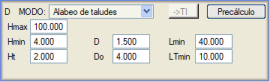
Vektör +2B Çizgi + Duvar Hendek ve ardından vektörel yarma kesiti 2B çizginin konumuna kadar götürülür. Bu noktadan itibaren, vektörün ilgili kotuyla Duvar başlatılır. 2B çizgi, hendek tabanından vektörel yarma sonuna kadar kesiti kesebilir; eğer bu kısa kalırsa, 2B çizginin konumuna kadar yatay olarak uzatılır. Eğer vektör, 2B çizginin konumunda arazinin üzerinde kalırsa, duvar havada kalabilir ve temelinin altında dolgu görünebilir. Tünel ve Aç-Kapa Tünel için Yarma Kesitleri Bu tip kesitler, bu menüden veya tüneller menüsünün kendisinden, burada açıklandığı gibi beyan edilebilir. |